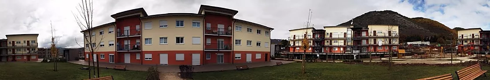
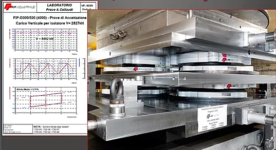
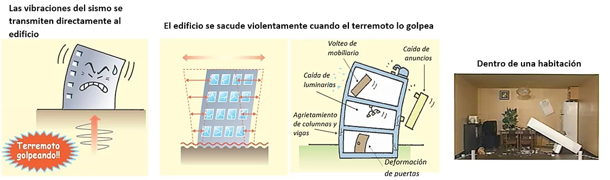
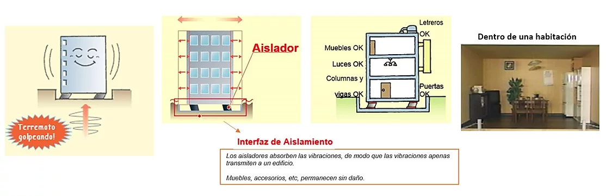

NUESTRA PAGINA SE ENCUENTRA EN CONSTRUCCION
pero les mostramos un poco de informacion
Protección Sísmica de México es representante exclusivo en México de la empresa italiana FIP industriale.
FIP Industriale se enorgullece en haber contribuído al desarrollo de dispositivos antisísmicos, en particular de aisladores y amortiguadores en los últimos 40 años. En los años 70, FIP Industriale proyectó y produjo dispositivos antisísmicos para el primer puente con estructura aislada sísmicamente en Europa, el viaducto Somplago de la autopista Udine-Tarvisio.
FIP Industriale posee uno de los más grandes laboratorios de Europa en su tipo, equipado con una mesa de pruebas de 8.000 toneladas y varios equipos para pruebas dinámicas que utilizan un sistema de energía hidráulica de 680 kW.
La calidad de sus dispositivos es tal que los amortiguadores de fluido viscoso y los deslizadores en superficie plana con amortiguadores histeréticos de acero fueron ensayados con éxito en California, de acuerdo con el protocolo HITEC de Estados Unidos. Vale la pena señalar también las pruebas llevadas a cabo en las instalaciones del laboratorio para dispositivos de respuesta sísmica modificada (SRMD) del Departamento de Transorte de California (Caltrans), en la Universidad de San Diego. Allí fueron ensayados los amortiguadores de fluido viscoso para el puente RionAntiron (Grecia) y el puente Lauriero (Portugal).
CÓMO FUNCIONA esta tecnologia ??
Edificio ordinario

Edificio Aislado
